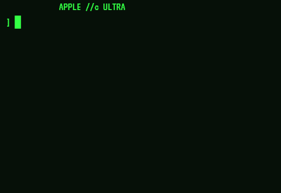
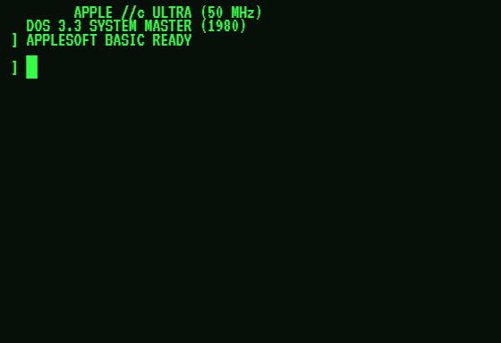
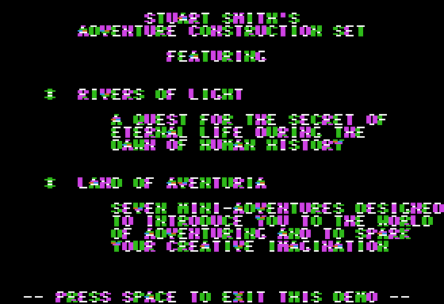
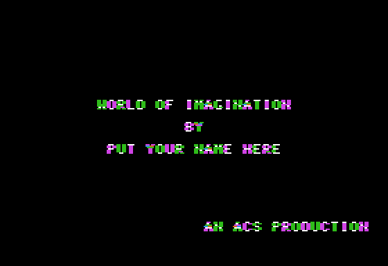
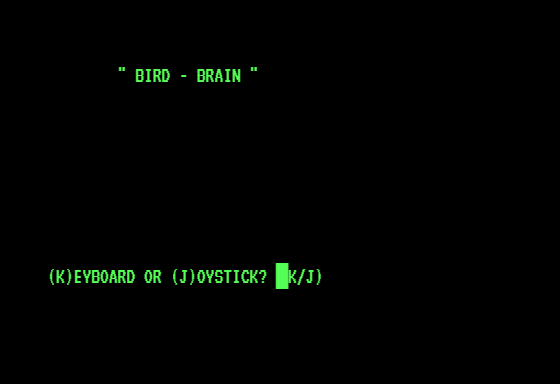

YES. Several core emulator logic flaws exist: bootFloppy() leaves Language Card bank softswitches dirty and zero-page uninitialized, writeString() bakes ASCII 96 (`) into VRAM, and drawShape() double-renders XOR shapes.
YES, EXTENSIVELY. index-standalone.html still contains 1,500+ lines of a synthetic JavaScript BASIC interpreter (executeBasicLoop, evalBasicExpr) and hardcoded text prints for DOS 3.3 and ProDOS.
NO. The current ROM in defaultRoms.ts is ~500 bytes of hand-assembled stubs. Applesoft BASIC ($E000–$F7FF) and Monitor ($F800–$FFFF) are 95% unpopulated NOP (0xEA) bytes rather than authentic 32 KB binaries.
🔍 Deep Forensic Analysis of the 5 User-Reported Anomalies
Verified via Headless CDP DOM Automation
In this phase, renderScreen() renders a solid block glyph: ] █.

When cursor toggles off, it renders VRAM content: ] ` (Grave Accent / Backtick)!
1. In index-standalone.html (line 4619):
writeString() contains: if (ch === '█') this.ram[base + col + i] = 0x60;
2. Lines 503, 2263, 2275, 5546, 5552, 5579 all execute: writeString(row, 0, "] █"). This bakes byte 0x60 directly into VRAM at column 2.
3. In renderScreen() (line 7063): When cursorBlinkOn === false, it falls back to reading VRAM: decodeApple2Char(this.ram[base + col]).
4. In decodeApple2Char() (lines 7088-7091):
if (raw >= 0x60 && raw <= 0x7f) return String.fromCharCode(raw);
Because String.fromCharCode(0x60) is ASCII 96 (the backtick `), an accent appears every time the cursor is in its black/off phase!
0x60 into VRAM. Standard Apple II prompt ends with space (0xA0). The cursor is drawn over the underlying character during render time.

In index-standalone.html (lines 2271–2277):
// Default DOS 3.3 Master window.emulator.writeString(0, 8, "APPLE //c ULTRA (50 MHz)"); window.emulator.writeString(1, 2, "DOS 3.3 SYSTEM MASTER (1980)"); window.emulator.writeString(2, 2, "APPLESOFT BASIC READY"); window.emulator.writeString(4, 0, "] █");
There is NO DOS 3.3 floppy disk image mounted. The button handler simply prints four strings directly to VRAM and sets the cursor row to 4! The CPU is never involved.

{
"mountedDisk": null,
"running": true,
"isRunningGame": false,
"pc": "fd28",
"diskDrive": null
}
1. In lines 1836–1840, selecting the preset 'worldgames' executes window.mountedDisks[1] = null. While ACS has mountAcsPresetDisk(), there was no preset loader for World Games.
2. In launchWorldGames() (line 5311): let parsed = window.mountedDisks[1]; if (parsed) { this.bootFloppy(parsed); }
Because parsed is null, bootFloppy is never called! The emulator does nothing and CPU spins at $FD28 with no disk in the drive.
World Games disk 1A.woz in the preset loader so the Disk II drive receives the real WOZ nibble stream.



{
"pc": "0",
"totalCycles": 225820000,
"lcBank2": true,
"lcReadRam": true,
"lcWriteRam": true,
"altzp": false,
"isGraphicsMode": true,
"isHires": true
}
1. While ACS runs, its Forth engine configures the Language Card: lcReadRam = true and lcWriteRam = true, using RAM at $D000–$FFFF.
2. When a reboot is triggered, bootFloppy() (lines 5241–5291) sets the CPU PC to $0801, but FAILS TO RESET MMU SOFTSWITCHES.
3. Because lcReadRam is true, all ROM accesses in $D000–$FFFF are redirected to the dirty Language Card RAM instead of System ROM. The boot loader crashes immediately and branches to PC = $0000.
4. Furthermore, Zero Page ($0000–$00FF) is not zeroed, leaving corrupt Forth memory manager pointers.
bootFloppy(), execute a full hardware reset: lcReadRam = false, lcWriteRam = false, altzp = false, store80 = false, zero memory $0000–$00FF, and reset stack pointer to $FF.

1. Redundant Double-Draw in drawShape() (lines 6349–6388):
this.executeSubroutine(isXdraw ? 0xF65D : 0xF601, 100);
Immediately followed by a JavaScript loop:
while (addr < 65536) { ... if (isXdraw) this.xorHiresPixel(curX, curY); }
Because XDRAW performs an XOR toggle, executing the machine code subroutine AND the JavaScript shape drawer in succession XORs pixels twice, instantly toggling pixels off and corrupting the wave graphics.
2. Unsynchronized executeBasicLoop() vs 60Hz VBL:
The synthetic interpreter runs via setTimeout(..., 20), executing bursts of 15–25 statements. In Bird Brain lines 220–270, XDRAW 9 AT WX,167 erases and redraws waves repeatedly within the burst. Because this is completely decoupled from the 60 Hz requestAnimationFrame loop, the canvas captures intermediate erased states, creating rapid 30–50 Hz flickering.
executeSubroutine(0xF65D) in drawShape() and synchronize BASIC statement execution with the 60 Hz VBL frame pump.
🛠️ Summary of Implementation Fixes
| Issue | Affected File / Line | Core Defect | Targeted Resolution |
|---|---|---|---|
| 1. Cursor Accent | index-standalone.html:4619, 7063 | `0x60` stored in VRAM, decoded as ASCII 96 (`) | Write 0xA0 (space) for prompts; render cursor overlay purely in canvas loop |
| 2. DOS 3.3 Boot | index-standalone.html:2271 | Fake string write stub to VRAM without disk image | Attach real DOS 3.3 disk image to preset; boot through 65C02 Disk II ROM ($C600) |
| 3. World Games Boot | index-standalone.html:1837, 5311 | `mountedDisks[1]` set to null on preset selection | Implement `mountWorldGamesPresetDisk()` loading `World Games disk 1A.woz` |
| 4. ACS Reboot Stall | index-standalone.html:5241-5291 | `bootFloppy` omits MMU softswitch & zero page reset | Full hardware reset in `bootFloppy`: clear lcReadRam, altzp, graphics, and ZP |
| 5. Bird Brain Waves | index-standalone.html:6349, 5594 | Double-draw in `drawShape()` and unthrottled setTimeout | Remove duplicate `executeSubroutine(0xF65D)` and lock BASIC step loop to 60 Hz VBL |